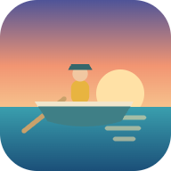

Windows
Windows 10 or 11, 64-bit. An installer: choose where it goes; it adds a Start menu entry and a desktop shortcut.
Download the installerSlow-Tide-Setup-x64.exe

The same quiet fishing game as in the browser, in a window of its own: it plays from its own files with no connection needed, keeps going at full speed behind other windows, and goes full screen with F11.
Windows 10 or 11, 64-bit. An installer: choose where it goes; it adds a Start menu entry and a desktop shortcut.
Download the installerSlow-Tide-Setup-x64.exe
A Mac with an M1 chip or later (macOS 12 or newer). Open the disk image and drag Slow Tide to Applications.
Download for Apple siliconSlow-Tide-arm64.dmg
A Mac with an Intel processor (macOS 12 or newer). Open the disk image and drag Slow Tide to Applications.
Download for IntelSlow-Tide-x64.dmg
64-bit, as an AppImage: one file that runs as it is (Steam Deck too, in desktop mode). Make it executable and open it.
Download the AppImageSlow-Tide-x86_64.AppImage
Not sure which Mac? Apple menu → About This Mac: it says Chip: Apple M… or Processor: Intel. Every version, with its notes: all releases.
A copy that's signed opens like any other app. Until the installers carry a publisher's signature (each release says whether it does), your computer will ask once whether you trust it:
“Windows protected your PC”: choose More info, then Run anyway. After that it starts like any other program.
“Apple could not verify Slow Tide…”: choose Done, then open System Settings → Privacy & Security, scroll down to Slow Tide and choose Open Anyway. (On macOS 14 and earlier, Control-click the app in Applications and choose Open instead.) You're asked only the first time.
Make the file executable (its Properties → Permissions, or chmod +x Slow-Tide-x86_64.AppImage) and open it. If it doesn't start, your system may need FUSE 2 for AppImages (on Ubuntu: sudo apt install libfuse2t64, or libfuse2 before 24.04).
The app saves as it goes, like the browser version, and keeps a copy of your save as a file:
%APPDATA%\Slow Tide\saves\slow-tide-save.json~/Library/Application Support/Slow Tide/saves/slow-tide-save.json~/.config/Slow Tide/saves/slow-tide-save.jsonThe journal opens that folder for you: Your progress → Open the saves folder (on a Mac, also in the Slow Tide menu). Copy the file to keep a backup, or to carry your game to another computer: a computer with no game of its own starts from it.
Coming from the browser? In the browser's journal, choose Download a copy; then in the app's journal, Load a saved copy… and pick that file. Your photographs live with the browser, so download the album from there too if you'd like them.
When it starts, the app looks for a new version (on this game's releases, and nowhere else). If there is one, it downloads it in the background and says so; it never restarts on you. Choose Update on the title screen or in the journal to restart into it, or just carry on: it's installed the next time you quit. Your progress is kept either way.
To stop it looking, untick Look for a new version when the game starts in the journal (on a Mac, also in the Slow Tide menu); Check for updates still looks whenever you ask. A Mac copy that isn't signed can't replace itself: there, Update brings you back to this page for the new one.
Nothing to install: the game runs in any up-to-date browser, saves in it, and can be added to your home screen or kept for playing offline.